https://knxm.github.io/reveal.js/msfd38.html
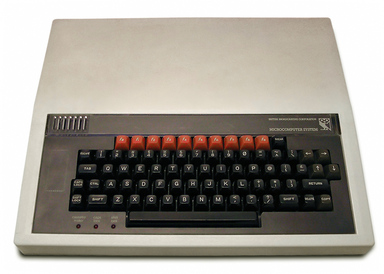
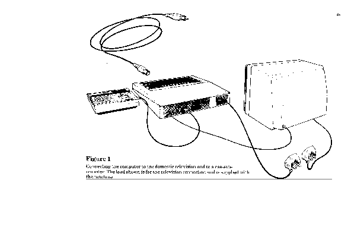
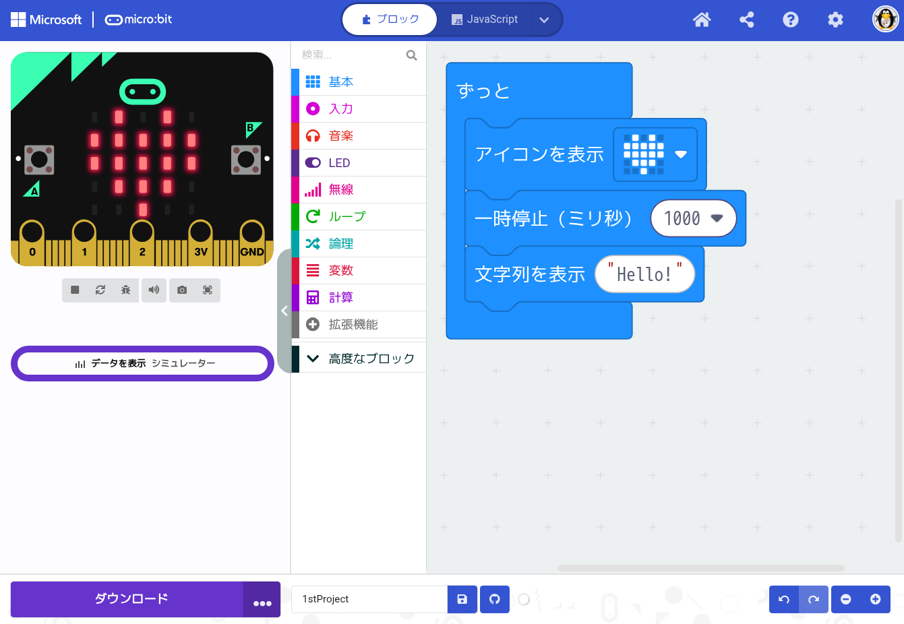
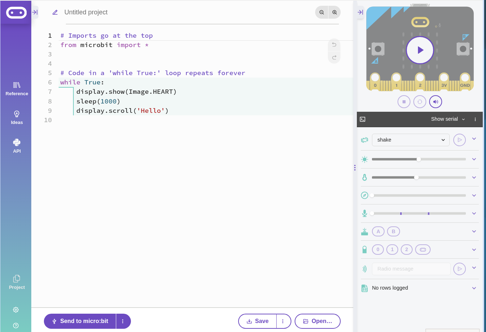
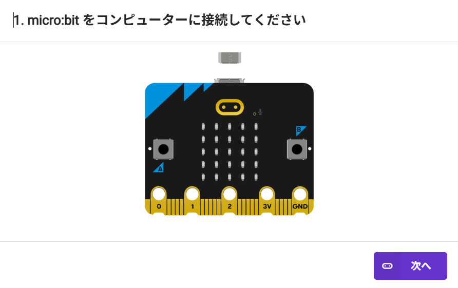
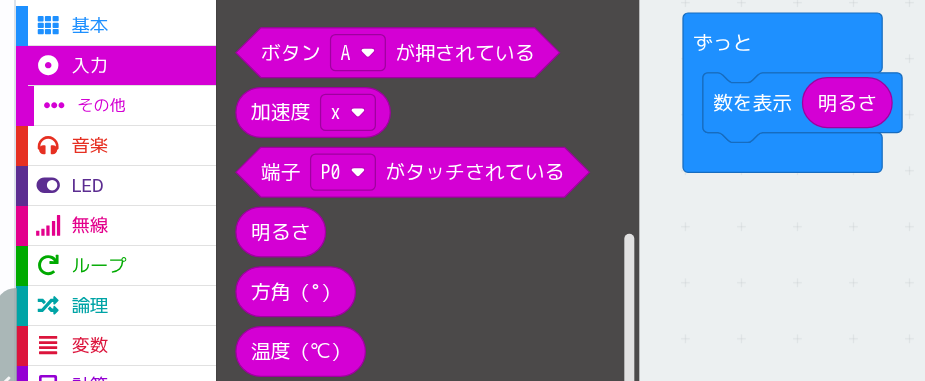
その他→「磁力（μT）」，「傾斜（°）」
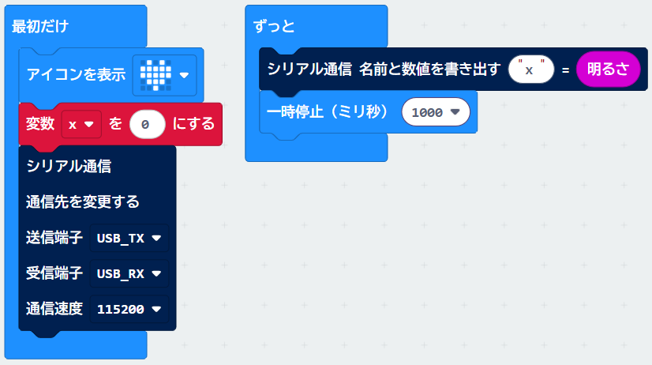
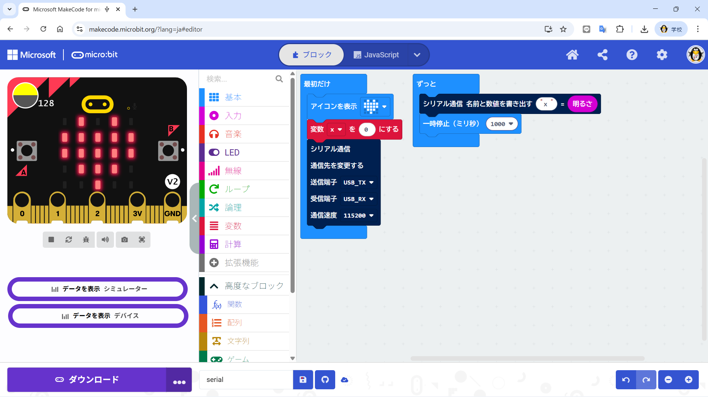
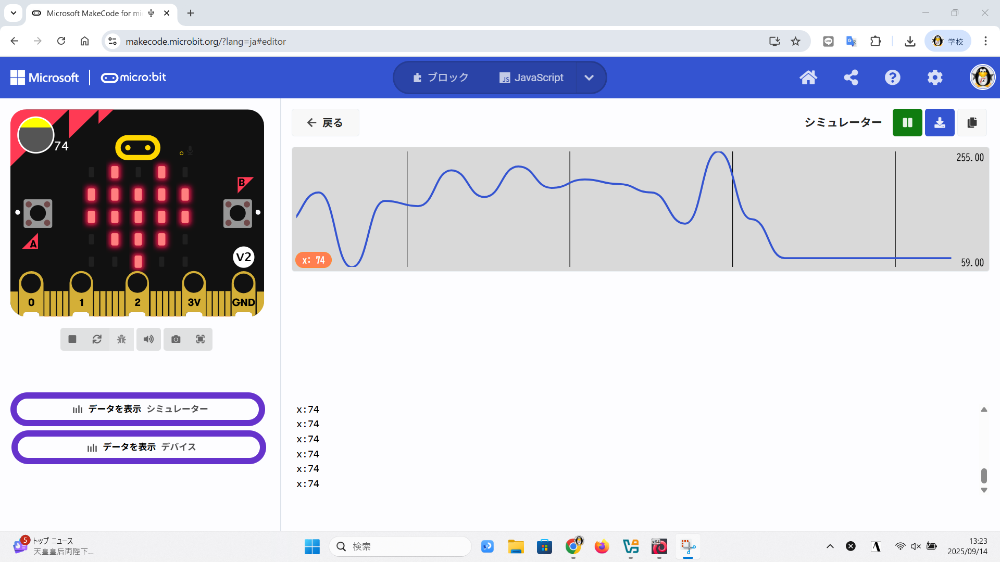
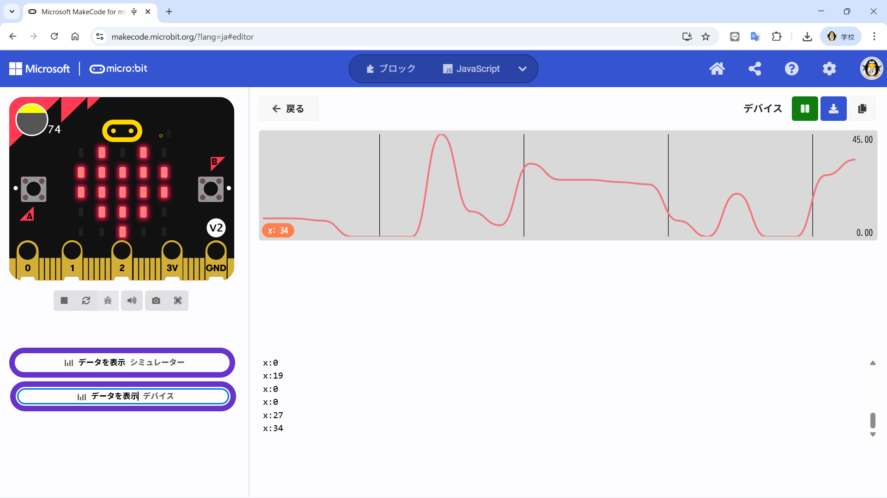
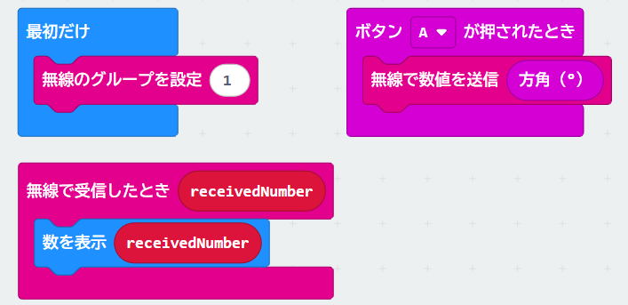
2台のmicro:bitにダウンロード
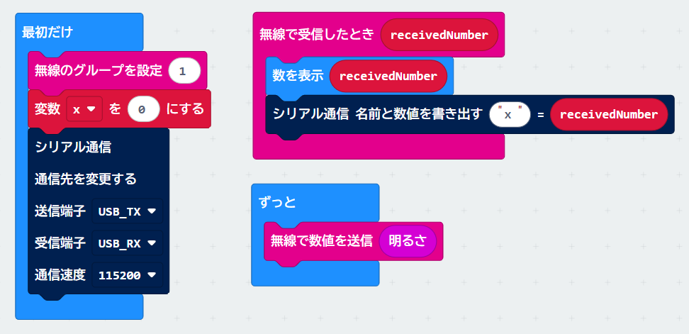
2台のmicro:bitにダウンロード
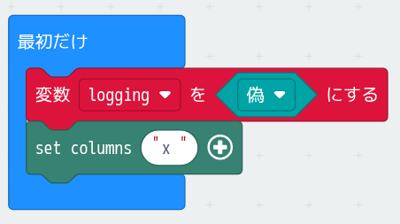
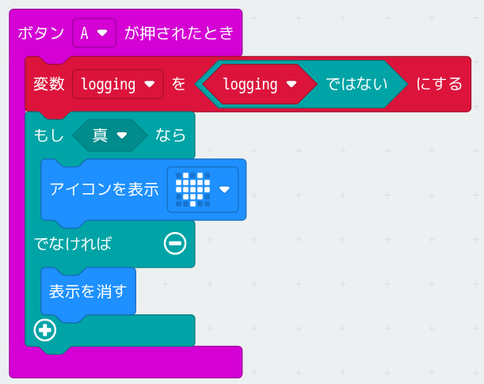
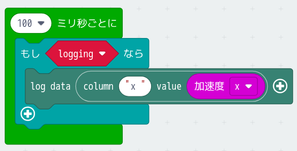
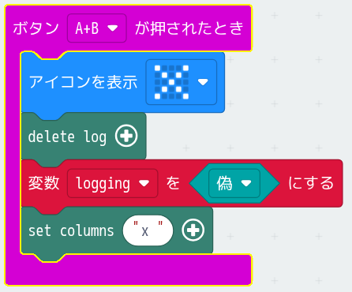
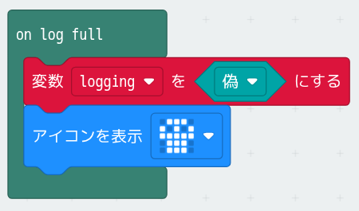
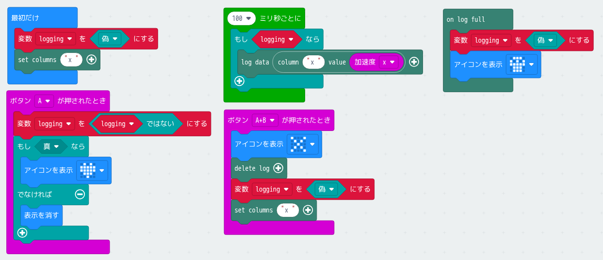
MakeCode : accel_log
let logging = false
logging = false
datalogger.setColumnTitles("x")
loops.everyInterval(100, function () {
if (logging) {
datalogger.log(datalogger.createCV("x", input.acceleration(Dimension.X)))
}
})
input.onButtonPressed(Button.A, function () {
logging = !(logging)
if (true) {
basic.showIcon(IconNames.Heart)
} else {
basic.clearScreen()
}
})
input.onButtonPressed(Button.AB, function () {
basic.showIcon(IconNames.No)
datalogger.deleteLog()
logging = false
datalogger.setColumnTitles("x")
})
datalogger.onLogFull(function () {
logging = false
basic.showIcon(IconNames.Skull)
})
logging = False
datalogger.set_column_titles("x")
def on_every_interval():
if logging:
datalogger.log(datalogger.create_cv("x", input.acceleration(Dimension.X)))
loops.every_interval(100, on_every_interval)
def on_button_pressed_a():
global logging
logging = not (logging)
if True:
basic.show_icon(IconNames.HEART)
else:
basic.clear_screen()
input.on_button_pressed(Button.A, on_button_pressed_a)
def on_button_pressed_ab():
global logging
basic.show_icon(IconNames.NO)
datalogger.delete_log()
logging = False
datalogger.set_column_titles("x")
input.on_button_pressed(Button.AB, on_button_pressed_ab)
def on_log_full():
global logging
logging = False
basic.show_icon(IconNames.SKULL)
datalogger.on_log_full(on_log_full)
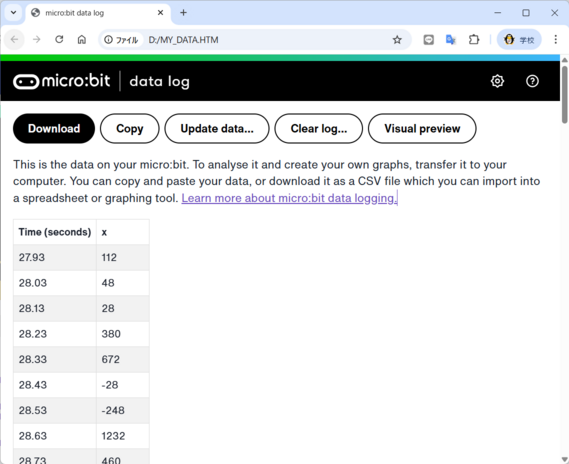
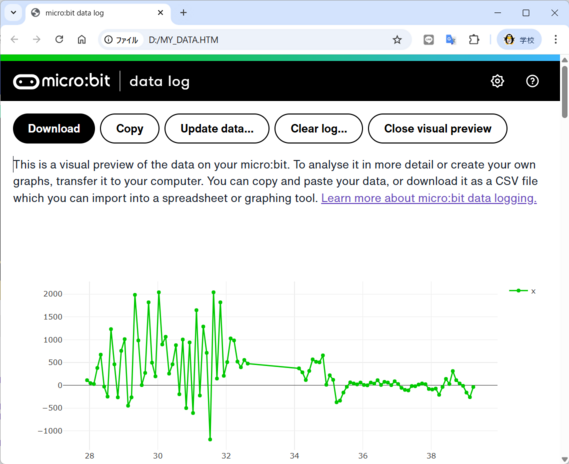
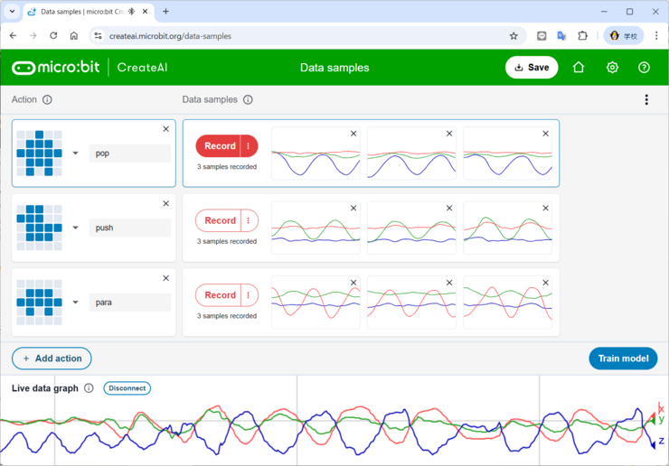